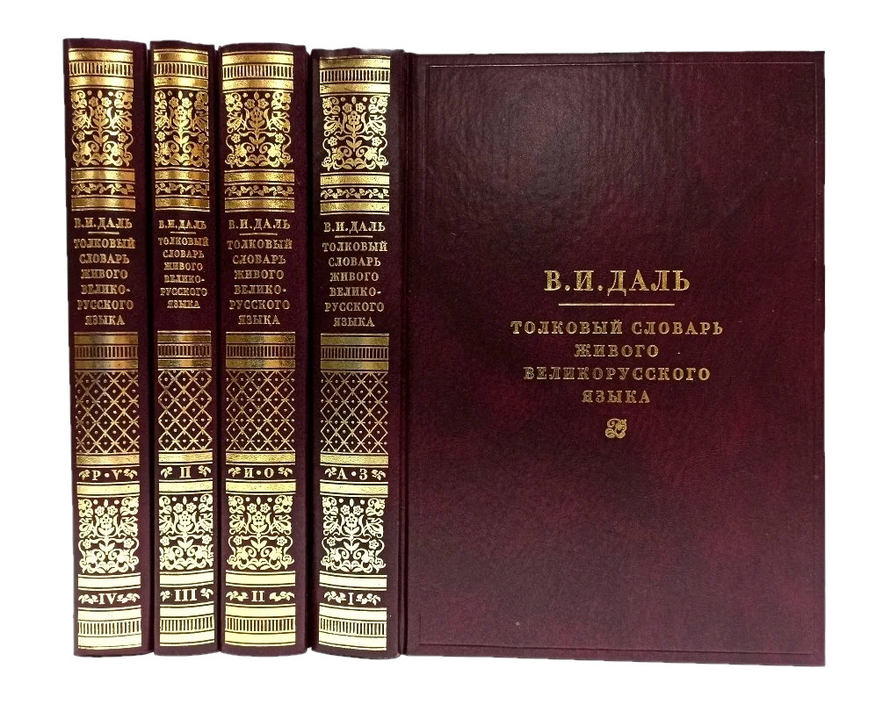
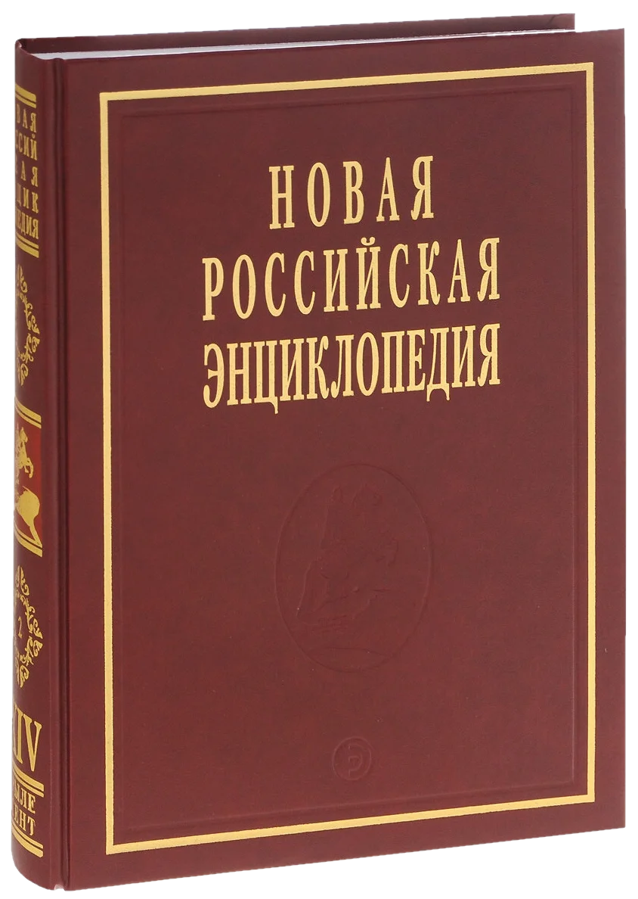

Главная страница
Справочная литература:
Справочная литература – это вид литературы вспомогательного содержания, который используется для получения краткой, обобщенной, достоверной информации по тому или иному вопросу. Справочными книгами пользуются в школе, техникумах, университетах, при овладении различными навыками и профессиями, ведь книга является первым и основным источником знаний.
Виды справочной литературы:
-
Словарь
Представляет собой перечень слов или понятий с краткими характеристиками или переводом, указанных в книге в алфавитном порядке. Мы обращаемся к языковым словарям, если необходимо узнать значение слова, его происхождение, при переводе текста с другого языка. Словари бывают языковые (лингвистические), энциклопедические и терминологические. Лингвистические словари, в свою очередь, бывают: научными, учебными, популярными. Кроме того, выделяются общие и частные языковые словари. К общим причисляются орфографические, толковые и орфоэпические издания. К частным — диалектные, лингвострановедческие и другие типы глоссариев.
-
Энциклопедия
Энциклопедия — разновидность справочной литературы, в которой изложена наиболее значимая информация по одной или всем отраслям знаний. В век информационного взрыва и научно-технического прогресса энциклопедические издания характеризуются многообразием форм и содержания. Выходят в свет множество полных (больших) и кратких (малых) энциклопедий. Энциклопедическая литература является главным помощником в получении разных знаний и сведений. Она рассказывает о технике и науке, космосе и искусстве, природе и человеке. Часто интересный текст дополняется красочными иллюстрациями.

Справочник — книга, в которой содержатся краткие сведения о технике, науке, производственной и человеческой деятельности, и носит прикладной, практический характер. Являются одними из самых древних изданий, например, «табличные» справочники в виде календарей, появились значительно раньше книг. Справочники предполагают выборочное чтение и используются для быстрого поиска в них справки. Их структура, как правило, систематизирована, заголовки в них упорядочены по определенному принципу.